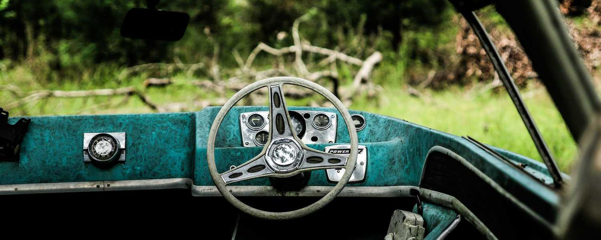

En Ravir.com, creemos en el poder de la radio para conectar, inspirar y entretener a las personas en todo el mundo.
Nuestra plataforma nació de la pasión por la radio en línea y el deseo de proporcionar a los oyentes una experiencia auditiva excepcional. Con una amplia variedad de estaciones de radio de todos los géneros y rincones del mundo, Ravir.com es tu destino definitivo para descubrir nuevas voces, música emocionante y programas cautivadores.
Desde nuestro lanzamiento, nos hemos comprometido a construir una comunidad global de amantes de la radio, donde la diversidad de sonidos y culturas se celebra y se comparte. Ya sea que busques las últimas canciones pop, los ritmos indie más frescos, debates políticos estimulantes o transmisiones deportivas en vivo, en Ravir.com encontrarás algo que te emocione y te inspire.
Nuestro equipo está formado por apasionados de la radio, expertos en tecnología y entusiastas de la comunidad que trabajan incansablemente para mejorar tu experiencia en Ravir.com. Nos esforzamos por ofrecer una plataforma fácil de usar, con características innovadoras que te permitan personalizar tu experiencia auditiva y descubrir nuevas joyas radiofónicas con cada visita.
En Ravir.com, nuestra misión es simple: queremos ser tu compañero de confianza en el viaje sonoro de la radio en línea. Nos comprometemos a ofrecerte una experiencia sin igual, llena de música emocionante, programas interesantes y momentos memorables que te acompañarán dondequiera que vayas. Únete a nosotros y descubre un mundo de posibilidades auditivas en Ravir.com.
Todas tus emisoras de radio a un clic de distancia. Elige tu estación de radio favorita y escucha las mejores opciones en el mundo. EMPIEZA AQUÍ
Enlace # 1¿Eres dueño de una radio y te gustaría tener más oyentes? Regístrate y promocionate en los primeros puestos. Conviértete en tendencia en Ravi.com.
Enlace # 2Escuche todas sus estaciones de radio en su teléfono móvil usando nuestro sitio web. Disfruta en cualquier lugar donde te encuentres las mejores opciones.
Enlace # 1